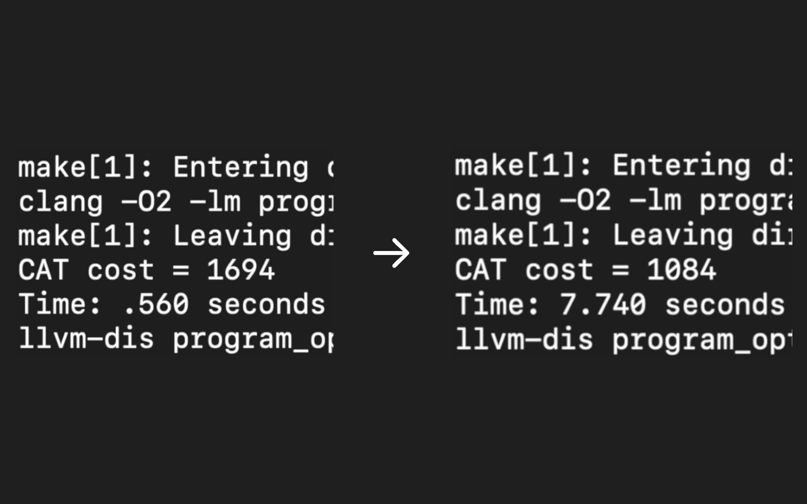

Almost-C Compiler
A compiler that lowers a C-like language into an IR and
generates Intel x86-64 assembly code, built from scratch in C++.
Implements graph coloring register allocation, abstract syntax
tree instruction selection, and optimizations including constant
propagation and dead-code elimination.

CAT LLVM Pass
An LLVM pass written in C++ that optimizes programs that use a
toy language that supports basic arithmetic operations.
Efficiently performs reaching definition and liveness analyses
to eliminate unnecessary operations. Reduced execution cost with
optimizations such as constant folding, dead-code elimination,
function inlining, and loop unrolling.

Strava Wx
Automatically fetches weather data from OpenWeatherMap and adds
it to new outdoor Strava activities. Written in Go and deployed
on AWS Lambda, Amazon SQS, and Amazon DynamoDB.

Purple Hours
A web application that facilitates office hour scheduling for
Northwestern students and TAs. Built with React and Firebase.
Used agile development practices to iterate and deliver the app
with a team of 7 developers.